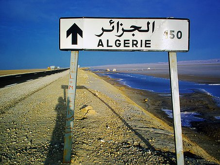
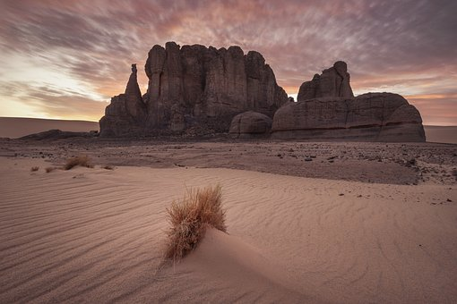
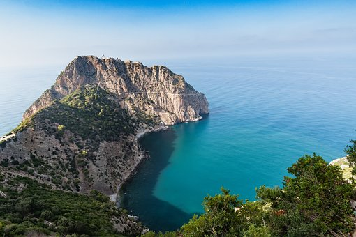
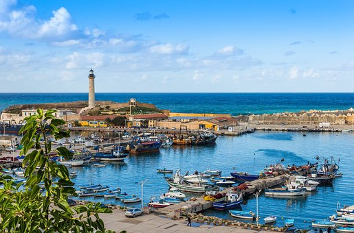

The All About Algeria website aims to make you discover Algeria as you never knew it. Whether you are curious or have planned a trip to Algeria, you are in the right place!
Algeria is a fascinating and unknown country, covering an area of 2,381,741 km², which makes it the largest country in Africa, the Arab world and the Mediterranean basin. Located in the North-West of the African continent, Algeria has 1.200 km of coastline on the Mediterranean Sea.

The tourist potential of Algeria is much more important than its natural resources and it is underestimated:
-1200 kilometers of coastal area
-Mountains with untouched nature offering the possibility of skiing in winter in some places
-The Sahara, the largest desert in the world, most of which is in Algeria
-Remains of the Roman era for which Algeria was the granary of the Roman Empire
-Museums of art out of standards
Here is the Algerian desert

Algerian desert, called Sahara. It represents a large part of the country
Algerian culture is strongly influenced by the country's recent history, as well as by other aspects such as literature, music, arts, crafts and religion
Regarding language, Arabic is the primary language of Algeria and is spoken by approximately 82% of the population. Past French colonialism has made French the second language of many educated Algerians, and English is rarely spoken. Many Algerians also speak various dialects of Berber
The Algerian beaches

Algeria has many beaches located in the north of the country, at the level of its maritime borders
The country is divided into 48 provinces (called "Wilayas") and each has different cultural characteristics and riches to offer. All About Algeria will help you learn more about the main regions before you set off. Stay tuned as we fly to Algeria!
The Algerian coasts
 Algeria has a maritime border with Spain
Now you can get a better idea of Algeria and locate it
Here you can learn more about the country from a general, cultural, economic point of view ... but above all you can get personalized advice from bi-nationals who travel a lot in the country and who will be able to guide you to organize your trip to Algeria.
You can find information sheets organized by province in order to go to the best tourist sites, the best restaurants, the best hotels, the best beaches etc.
But you will also find advice on how to carry out your administrative procedures to get there, advice on how to best adapt to the local culture and customs and much more.
In a single goal to promote the Algerian culture, the files of All About Algeria.site will be accessible free to all, nevertheless we also propose the service of planning of voyage, you have the possibility of letting us organize you your stay of A to Z for that nothing more it is enough to contact us and one will be able to subject you a personalized estimate.
Do not hesitate to contact us for more information